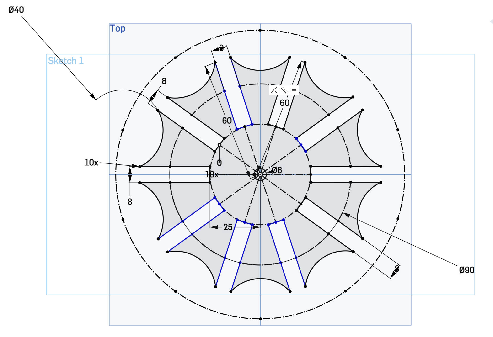
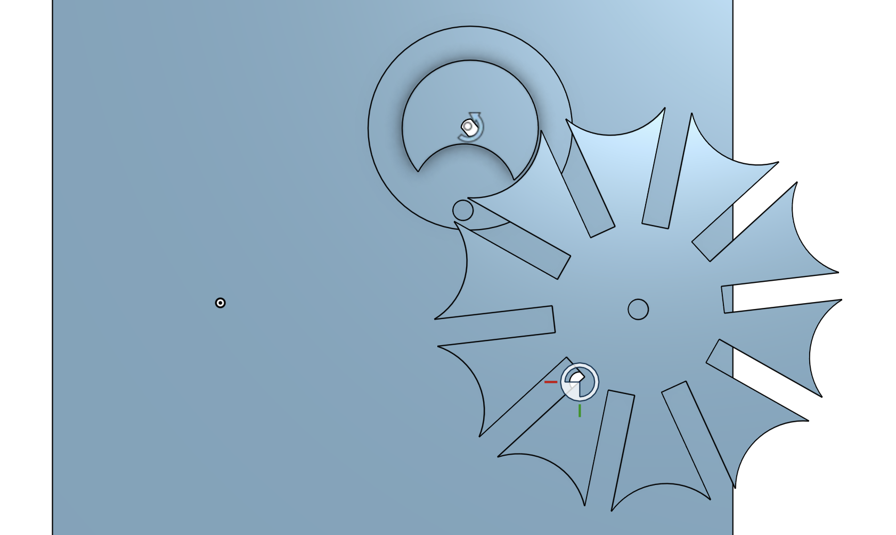
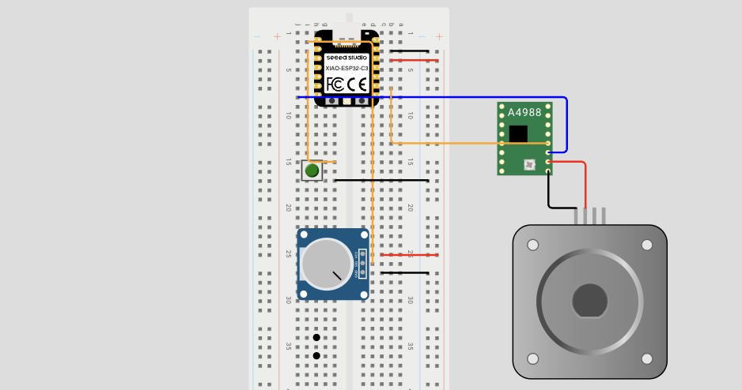
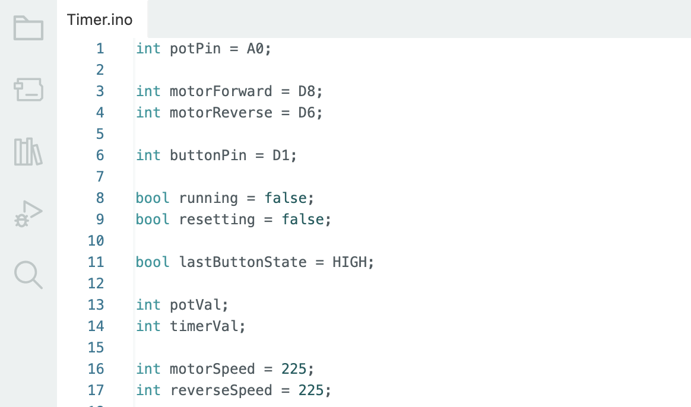
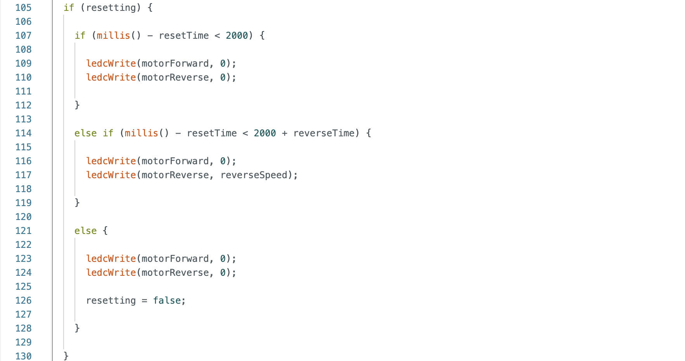
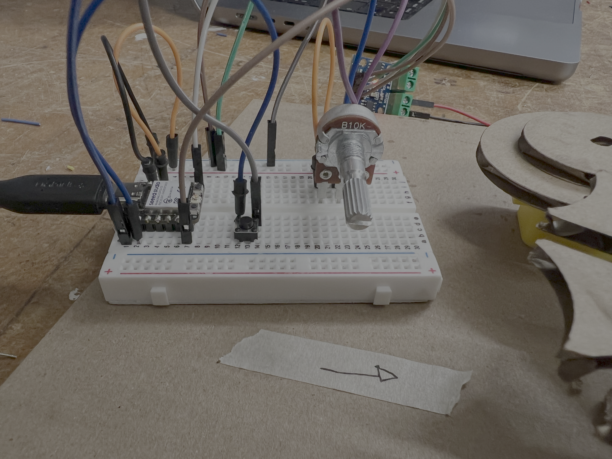
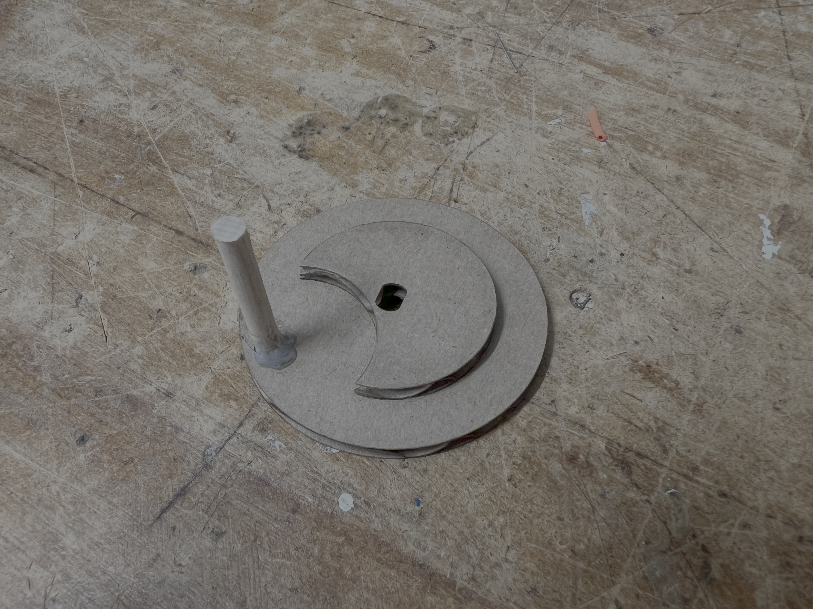
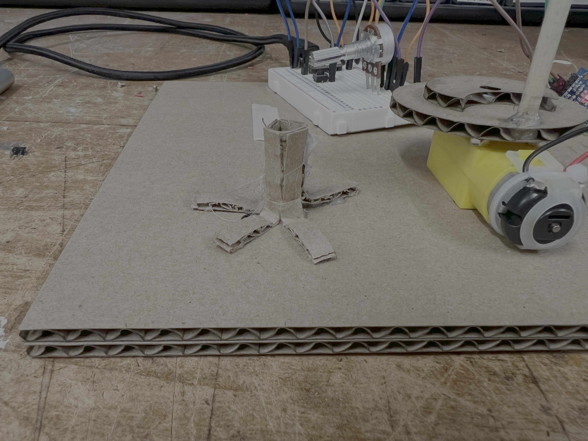

After some brainstorming, I realised that a motor, correctly configured, could be used as a clock. Now, given this is a brushed motor, I can't set the speed too low or it won't start, nor can I control it's motion in accurate increments, which rules out directly programming the clock behaviour into the motor. If I could control the speed to correspond one rotation with one second though, then I could use that to drive some form of clock without requiring very accurate motion. This is where I then changed the idea to a countdown timer, which would use a potentiometer to set the time, a button to start the motor, and a geneva wheel mechanism, to increment the time by one with every rotation. The lowest potentiometer resistance would be 0 seconds, and the highest would be 60 seconds.



CAD & Circuit Design Process
As can be seen in the images above, the Geneva wheel design ended up being unconstrained as however hard I tried to fully constrain it, for some reason the draing would break at the point of full definition. Given the amount of time I spent trying to get it to work, eventually I decided to just check my measurements and accept a mostly defined sketch. I designed the locking wheel that sits on the driving wheel, to have the same radius as the outer curved edge of each arm of the Geneva wheel, so they would interact as closely together as possible.
For the circuit, I modified the dimming LED circuit from the lab, by replacing the LED with the motor, and incorporating a button. The potentiometer, button, and motor are all separately connected to the Xiao, each one provides it's own sequential input (Set the time, then press the button, then start the motor).


Arduino code variable instantiation & Reversing code
To make the motor rotate at 1 revolution per second, I had to modify the PWM constant (Which affects the speed). I calculated that on a scale of 1-255 (Minimum to maximum speed), 194 corresponded with 1 RPM. However, at 194, the motor did not have enough momentum to start, so with a bit of experimentation I found that 225 was the lowest PWM value I could set which allowed the motor to start.
I also added a function to reverse the motor 2 seconds after the timer had completed, so you could have the timer run a second time.



User interface & Laser cut parts.
I assembled the circuit and positioned the potentiometer and button in an easy to reach place for the user. The laser cut parts came out well, however positioning the Geneva wheel close to the driving wheel was very difficult and involved a lot of trial and error. Once I found the right location, I crudely put together a slot to hold the Geneva wheel, which worked but because of its crudeness, sometimes during operation the wheel is spun more than once in one driving wheel revolution.
Here's a video of the result:
Timer running.